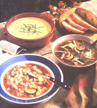
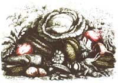

A streaming bowl of soup does more than just provide extra flavor to your meal.
Chicken cure all: Curing colds with chicken soup is no old wives' tale-a recent showed that eating soup reduced standard cold symptoms-even when diluted up to 200 times.
While living on our farm on the upper peninsula of Michigan, my family had a wood-burning stove on which we'd simmer soup all day long. And if you've ever survived a Michigan winter, you know how you come to live for your wood stove. Lunch was regularly signaled by the enticing smell of chicken minestrone or cream of broccoli, which permeated the house and didn't stop there. It frequently traveled right out the flue and down the road. While it may sound unbelievable, the aroma of cooked vegetables could sometimes be detected a mile away.
I remember one soup break in particular. My husband noticed that the stove's flue appeared to be somewhat loose and decided he would "fix" it. As he got down to work, he accidentally disengaged the flue pipe. The little scenario resulted in a soot-covered husband and equally covered two-year-old son. I can also assure you that soot does nothing to enhance the flavor of simmering soup.
Regarding nutrition, a recent study shows that eating a small bowl of soup before dinner helps overweight people to eat less and lose extra pounds (as long as they avoid cream soups). Remember how Grandma used to insist on bringing over hot chicken soup every time you had a sniffle? She also knew what she was doing. The University of Nebraska Medical Center recently determined that chicken soup (or broth) has antiinflammatory properties and reduces cold symptoms even when diluted up to 200 times.
SOUP SUCCESS
The secret to delicious homemade broccoli soup is to avoid overcooking the vegetable, which tends to leave the soup either flavorless or bitter.
There are no official rules when it comes to making soup. Use leftover pot roast or chicken legs along with dried beans, pasta, and the green beans junior wouldn't touch during dinner. Store celery tops, carrot ends, onion, tomato, fresh herbs, and other leftovers in your refrigerator or freezer.
Maybe you're wondering how you've managed to stock up your refrigerator with so much broccoli. If so, why not whip up a batch of cream of broccoli? You can avoid using all the butter, milk, or cream that goes into the standard broccoli soup by thickening it with pureed potatoes and other vegetables.
I make at least one pot of soup a week to have on hand during the winter months. That way family members who get hungry at strange times of the day can make their own meals. My son, who has grown quite fond of my soups, even enjoys the occasional cup of soup for breakfast. Best of all, having premade soup frees me on those cold nights when I just don't feel like cooking and would much rather curl up in bed.
Chicken Minestrone Soup
1 tablespoon extra-virgin olive oil
1 eight-ounce boneless chicken breast, skin removed
4 large cloves garlic, minced1 large onion, finely chopped
2 cups celery, finely chopped
2 1/2 cups zucchini or yellow squash, sliced into thin circles
1 can (28 ounces) plum tomatoes in juice, coarsely chopped (save the juice)
2 cups chicken broth
3 cups water
2 teaspoons balsamic or red wine vinegar
1 teaspoon sugar
2 teaspoons dried basil
1 teaspoon dried oregano teaspoon dried thyme
1 teaspoon powdered cayenne or one jalapeno pepper, chopped
salt and freshly ground pepper
1 15-ounce can northern white beans or two cups cooked dried beans
1 cup spiral or elbow pasta (I use the whole-wheat variety)
freshly grated Parmesan or Romano cheese
fresh chopped basil or parsley
In soup pot, saute chicken in oil. Cut chicken into bite-size pieces and set aside. Saute garlic and onion in remaining oil. Add celery, zucchini, tomatoes with juice, chicken broth, water, herbs, spices, chicken, and beans. Simmer, covered, for approximately 30 minutes. Add pasta and simmer for 15 more minutes. Taste and add additional seasoning if desired. Serve topped with grated cheese, parsley, or basil.
Potato Cheese Soup
This cheese soup is lower in fat than standard versions. If you want to use low-fat cheese to reduce the amount of fat even further, make sure it has a strong, aged flavor. I recommend using low-fat yellow smoked cheddar.
1 tablespoon butter
1 large clove garlic
1 large onion (2 cups), coarsely chopped
2 cups potatoes (about two medium potatoes), peeled and coarsely chopped
1 large carrot, sliced into 1/2" pieces1 cup chicken broth
1 cup water or vegetable broth
1 cup skim milk
4 ounces "lite" cream cheese
1 teaspoon dried dill1 teaspoon powdered cayenne pepper
1 1/2 cups yellow sharp cheddar cheese, grated
salt and fresh pepper
chopped parsley or chives
In soup pot, saute garlic and onion in butter until lightly browned. Then add vegetables, chicken broth, and water to pot. Cover and simmer for 30 to 40 minutes until vegetables are tender. Stir in milk and spices.
Pour mixture into blender and puree. Return to pot, add cheese, and simmer until cheese melts. Serve topped with chopped chives or parsley.
Hot and Sour Soup
1 tablespoon sesame oil
1/4 pound boneless pork, cut into matchstick-size pieces (cut when partially frozen)
3 cloves garlic, chopped
1 tablespoon ginger root, unpeeled and chopped
5 cups unsalted chicken broth, homemade or canned
1/4cup mushrooms, thinly sliced
1 8-ounce can bamboo shoots, drained and cut into strips
1 1-pound firm or extra firm tofu, drained and cut into 1" cubes
1 tablespoon white vinegar
4 to 6 drops chili oil (add more if desired)
3 tablespoons tamari (soy sauce)
a few pinches white pepper
1 tablespoon arrowroot flour* in 1/2 cup water (or use cornstarch)
1 egg white1 1/2 cups bok choy tops or fresh spinach leaves, chopped into thin strips
chopped green onions (optional)
*available at health food stores or in spices rack of supermarkets.
In soup pot, saut6 pork until lightly browned. (Make sure it's completely defrosted first.) Remove from pan and set aside. Saute garlic and ginger briefly; add broth. Simmer for 15 minutes, then strain. Return broth to pot with pork, mushrooms, bamboo shoots, tofu, and spices. Whisk arrowroot flour into 1/2 cup water and add to soup. Simmer for 10 minutes, until mushrooms are done. Stir in egg white. Add more water, vinegar, or chili oil if necessary. Add bok choy or spinach just before serving so it doesn't overcook. Top with a few green onions and serve.
Cream of Broccoli Soup
The color of this soup should be a beautiful bright green.
1 large clove garlic, chopped
1 medium onion, coarsely chopped
1 teaspoon butter
1 medium potato (1 1/2 cups), peeled and cut into cubes
1 15-ounce can chicken broth (or 2 cups homemade broth)
1pound broccoli (about
6 cups), with tough ends removed and stalks and tops cut into 1" chunks
1/2teaspoon curry powder1 teaspoon tamari
1 teaspoon cayenne pepper or a few drops of hot sauce
salt and pepper to taste
1 1/2 cups low-fat milk
chopped chives, yogurt, low-fat sour cream (optional)
In soup pot, saute garlic and onion in butter. Add potato and chicken broth. Simmer, covered, for approximately 1 minutes, or until potatoes are almost tender. Meanwhile, cut one cup of broccoli tops into small pieces. Place tops in vegetable steamer over potatoes for one to two minutes until just cooked. Remove broccoli and set aside.
Continue cooking potatoes. When almost done, add all of broccoli except the one cup of tops. Steam covered until just tender (they should still be bright green). Add milk and simmer for a few minutes. Puree soup in a blender until smooth, adding water if too thick. Return to pot and stir in broccoli tops. Season to taste. Top with chopped chives, low-fat sour cream, or yogurt if desired.
|
 Photo By Judd Pilossof; Food Styling By William Smith |
 |
|